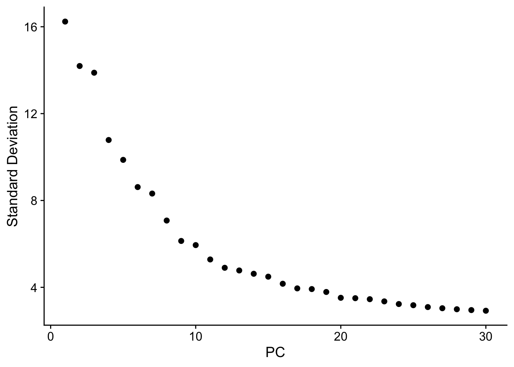
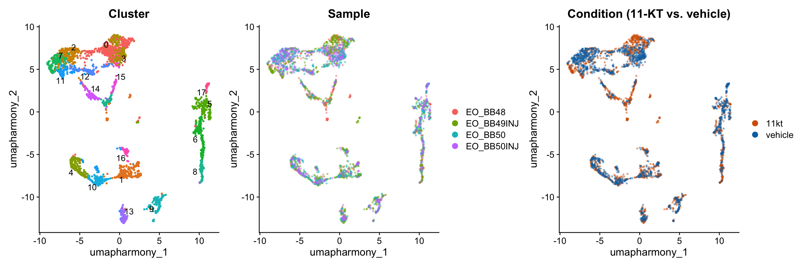
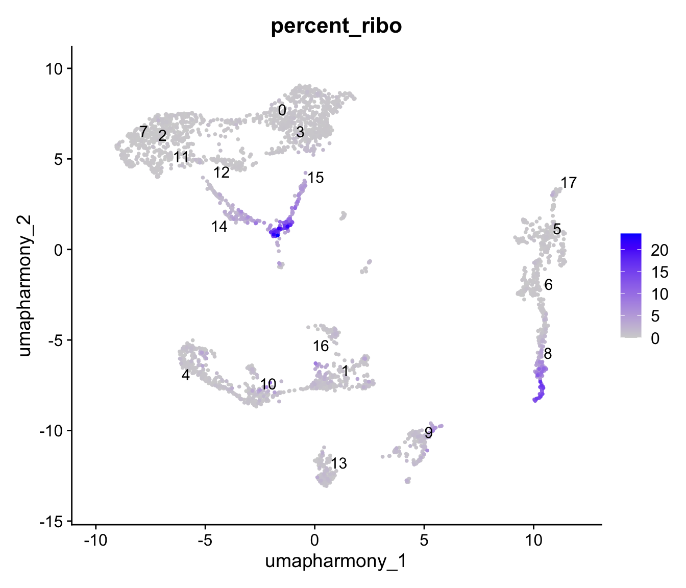

library(Seurat)
library(tidyverse)
library(patchwork)
library(glmGamPoi)
library(presto)
library(harmony)Preprocessing the Electric Organ snRNA-seq Data
NoteQuestions
- How do we load a CellRanger output and combine four samples into a single Seurat object?
- Why does SCTransform need to run before PCA, and what does each step contribute?
- When does GEM-well batch correction matter, and how do we check that Harmony actually helped?
- How do we choose a clustering resolution that produces biologically interpretable groups?
TipObjectives
- Load CellRanger-derived 10X count matrices for four EO samples and merge them into one Seurat object.
- Attach experimental metadata (sample, fish ID, treatment) before any downstream analysis.
- Apply SCTransform variance-stabilizing normalization and identify highly variable genes.
- Run PCA and read an elbow plot to pick how many PCs to retain.
- Correct for GEM-well batch with Harmony; compare PCA and Harmony UMAPs to confirm the correction.
- Build a kNN graph on the Harmony embedding, cluster with Louvain, and visualize the result by sample, treatment, and cluster.
Introduction
You watched the QC video and worked through the four-pool worksheet before class. The verdict was unambiguous: Pool 3 — the electric organ — is the focus of this workshop. Pool 4 was excluded, Pools 1 and 2 are available for special projects, and the EO library is real, with reasonable Cell Ranger cell calls and intronic fraction that — while lower than ideal — supports analysis.
This episode takes that raw count matrix and walks it through everything you need before you can ask any biological question:
- Load the four samples and merge them.
- Stamp every nucleus with its sample, fish, and treatment label.
- Normalize with SCTransform.
- Reduce dimensionality with PCA.
- Correct GEM-well batch with Harmony.
- Cluster on the Harmony embedding.
- Visualize and save a checkpoint for Saturday.
By the end of class today you will have an annotated Seurat object with clusters laid out on a UMAP. Tomorrow we use that object to assign cell types and run the 11-KT contrast.
TipWhere the data lives
The four EO samples live on the workshop server under data/ssrnaseq_data/EO/. Each sample (BB48, BB49INJ, BB50, BB50INJ) is its own folder of 10X-format files: barcodes.tsv.gz, features.tsv.gz, matrix.mtx.gz. The genome annotation (genes.gtf.gz) sits one directory up. You do not need to copy any of this — Read10X() reads directly from the folder structure.
Setup
We use Seurat for everything single-cell, tidyverse for data manipulation, and three specialized packages: glmGamPoi (accelerates SCTransform), presto (accelerates Wilcoxon for FindMarkers tomorrow), and harmony (batch correction).
Load the four EO samples
Read10X() reads a 10X-format folder and returns a sparse count matrix; CreateSeuratObject() wraps it with metadata structure. We loop over the four samples and keep each as a separate Seurat object for now — the merge step is cleaner that way.
tissue <- "EO"
sample_names <- c("BB48", "BB49INJ", "BB50", "BB50INJ")
list_seurat <- list()
for (sample in sample_names) {
data_dir <- file.path("data/ssrnaseq_data", tissue, sample)
seurat_data <- Read10X(data.dir = data_dir)
seurat_obj <- CreateSeuratObject(
counts = seurat_data,
min.features = 1,
project = paste0(tissue, "_", sample)
)
list_seurat[[sample]] <- seurat_obj
}
NoteWhy we do not filter further
Older snRNA-seq tutorials apply heavy manual filtering — minimum UMI thresholds, gene-per-cell cutoffs, mitochondrial-percent caps. We trust Cell Ranger’s cell calls in this workshop and skip that step. Two reasons:
- CellRanger’s barcode-rank algorithm gave clean cell calls for the EO pool (see the QC worksheet you completed before class — there is a clear knee).
- Manual thresholds on UMI and gene counts encode arbitrary judgment calls. We learn more by reading the Cell Ranger metrics carefully than by re-running a hand-tuned filter in Seurat.
For a production analysis you would also run CellBender for ambient-RNA removal. We skip that here to keep the pipeline self-contained; it is something to revisit before publishing.
Merge samples and attach metadata
Before any normalization, we merge the four objects into one and stamp each nucleus with the metadata that will travel with it for the rest of the analysis: sample, fish, and treatment.
# Merge into one object; add.cell.id prefixes each barcode with its sample
merged_seurat <- merge(
x = list_seurat[[1]],
y = list_seurat[2:length(list_seurat)],
add.cell.id = names(list_seurat)
)
# Seurat v5 layers must be joined before downstream analysis
merged_seurat <- JoinLayers(merged_seurat)
# sample: strip the tissue prefix from orig.ident
merged_seurat$sample <- sub("EO_", "", merged_seurat$orig.ident)
# fish: same as sample — each is a different individual
merged_seurat$fish <- merged_seurat$sample
# treatment: assigned by fish ID, NOT by the INJ suffix
# 11-KT treated: BB48, BB49INJ
# Vehicle: BB50, BB50INJ
treatment_map <- c(
BB48 = "11kt",
BB49INJ = "11kt",
BB50 = "vehicle",
BB50INJ = "vehicle"
)
merged_seurat$treatment <- unname(treatment_map[merged_seurat$sample])
head(merged_seurat@meta.data) orig.ident nCount_RNA nFeature_RNA sample fish
BB48_AAACGATGTTTGAGAG-1 EO_BB48 1813 930 BB48 BB48
BB48_AAACTCCGTCAGTAAG-1 EO_BB48 2725 1169 BB48 BB48
BB48_AAAGGTTGTCTTGCGA-1 EO_BB48 7636 2447 BB48 BB48
BB48_AAAGGTTGTTGACGGG-1 EO_BB48 3173 1523 BB48 BB48
BB48_AACAGGCGTAGCTCCA-1 EO_BB48 1588 691 BB48 BB48
BB48_AACAGGCGTTGAAGGC-1 EO_BB48 2841 1082 BB48 BB48
treatment
BB48_AAACGATGTTTGAGAG-1 11kt
BB48_AAACTCCGTCAGTAAG-1 11kt
BB48_AAAGGTTGTCTTGCGA-1 11kt
BB48_AAAGGTTGTTGACGGG-1 11kt
BB48_AACAGGCGTAGCTCCA-1 11kt
BB48_AACAGGCGTTGAAGGC-1 11kt
WarningThe INJ suffix is a library label, not a treatment indicator
Two samples are named BB49INJ and BB50INJ. The “INJ” suffix records a library-preparation detail — it does not indicate that those fish received a vehicle injection. Treatment is assigned by fish identity:
| Fish | Treatment |
|---|---|
| BB48 | 11-ketotestosterone (11-KT) |
| BB49INJ | 11-ketotestosterone (11-KT) |
| BB50 | Vehicle (cocoa butter) |
| BB50INJ | Vehicle (cocoa butter) |
Using the INJ string to infer treatment would flip the condition label for BB49INJ, producing exactly-wrong results downstream. Always check the experimental metadata, never the sample name.
Quick visual QC
The QC video covered Cell Ranger metrics in depth. Here we just confirm the per-sample UMI and gene distributions look like what we’d expect — no extra filtering. If one sample looked categorically different from the others (a la Pool 4) we’d stop and reconsider; the EO samples will look reasonable.
p_count <- VlnPlot(merged_seurat,
features = "nCount_RNA",
group.by = "orig.ident",
pt.size = 0,
cols = c("#E69F00", "#56B4E9", "#009E73", "#F0E442")
) +
theme(legend.position = "none") +
ggtitle("UMI counts per nucleus")
p_feat <- VlnPlot(merged_seurat,
features = "nFeature_RNA",
group.by = "orig.ident",
pt.size = 0,
cols = c("#E69F00", "#56B4E9", "#009E73", "#F0E442")
) +
theme(legend.position = "none") +
ggtitle("Genes detected per nucleus")
p_count | p_feat
NoteA contamination axis we can check: ribosomal content
In mouse and human scRNA-seq, the percentage of reads from mitochondrial genes (percent.mt) flags damaged or lysed cells. That metric isn’t available to us yet: mitochondrial genes in B. brachyistius don’t use the ^mt- prefix, so PercentageFeatureSet(pattern = "^mt-") returns ~0 for every cell — not because the nuclei are pristine, but because the pattern matches nothing. Identifying the correct mitochondrial gene names is a work in progress.
There is, however, a complementary axis we can compute today, and it is especially informative for single-nucleus data. Ribosomal-protein transcripts (rps*/rpl*) are cytoplasmic — they’re translated and live out in the cytosol, not the nucleus. A clean nuclear prep should therefore be depleted of them. A nucleus carrying a lot of ribosomal-protein mRNA is a sign of cytoplasmic carryover or ambient contamination — exactly the failure mode the nuclei-isolation episode warns about.
We compute the ribosomal-protein fraction now as a per-nucleus metric. At this stage it’s just a baseline — most nuclei should sit near zero. The interesting signal is per cluster, which we revisit once clusters exist.
merged_seurat[["percent_ribo"]] <- PercentageFeatureSet(
merged_seurat, pattern = "^rp[sl]"
)
summary(merged_seurat$percent_ribo) Min. 1st Qu. Median Mean 3rd Qu. Max.
0.0000 0.1796 0.3118 1.0775 0.6932 23.5632 Most nuclei are near zero with a small upper tail — as expected for a nuclear prep. Split by sample, the distributions look unremarkable; the contamination signal isn’t a whole-sample property, which is precisely why we defer the closer look until we can examine it cluster by cluster.
Normalization with SCTransform
Raw UMI counts vary across nuclei for two reasons: real biology (some cell types transcribe more RNA) and technical noise (nuclei were captured and sequenced at different depths). Normalization removes the technical component so downstream comparisons reflect biology.
We use SCTransform, which fits a regularized negative binomial regression per gene. The residuals from those fits are variance-stabilized and depth-corrected; they replace raw counts as the working expression matrix (in a new SCT assay).
NoteHeads up — longest chunk in the lesson
SCTransform on four samples takes roughly 3–8 minutes. The chunk runs with verbose = FALSE, so the Console will look quiet — that’s expected. Watch the R session indicator (or check top in a Terminal) to confirm it’s still working before assuming the kernel hung.
merged_seurat <- SCTransform(merged_seurat, verbose = FALSE)
ImportantChallenge 1: Inspect the SCT assay (5 min)
After SCTransform, the Seurat object has two assays: RNA (raw counts) and SCT (normalized residuals).
- How many variable features did SCTransform select? Hint:
length(VariableFeatures(merged_seurat)). - Compare a few values from
merged_seurat[["RNA"]]$counts[1:5, 1:3]andmerged_seurat[["SCT"]]$scale.data[1:5, 1:3]. What’s different about the SCT values?
TipSolution
length(VariableFeatures(merged_seurat))
# SCTransform selects ~3,000 variable features by default
merged_seurat[["RNA"]]$counts[1:5, 1:3] # integer UMI counts
merged_seurat[["SCT"]]$scale.data[1:5, 1:3] # Pearson residualsThe SCT scaled values are no longer integers — they are Pearson residuals centered near zero. A gene expressed higher than expected for the nucleus’s depth gets a positive residual; lower-than-expected gives negative. These residuals are what PCA operates on.
Principal component analysis
PCA compresses ~3,000 variable features into a small set of principal components — each a weighted combination of genes that captures one axis of variation in the data.
merged_seurat <- RunPCA(merged_seurat, verbose = FALSE, assay = "SCT")The elbow plot ranks PCs by variance explained. We pick enough PCs to be safely past the elbow.
ElbowPlot(merged_seurat, ndims = 30)
NoteReading the elbow plot
There is no single correct cutoff. Common practice:
- Use enough PCs that the elbow is comfortably included (15–30 for most datasets).
- Err on the side of more — including a few extra noisy PCs rarely hurts, but dropping informative ones can merge biologically distinct clusters.
TipWorkshop choice (predict first!)
We use 20 PCs throughout this episode — comfortably past the elbow and well within the “more is safer than fewer” zone.
We also store an un-integrated UMAP at this point so we can compare it to the Harmony-corrected version a few chunks down. This is purely for the before/after visual check.
merged_seurat <- RunUMAP(
merged_seurat,
dims = 1:20,
reduction = "pca",
reduction.name = "umap.pca",
verbose = FALSE
)This is a natural place to save a checkpoint. The next steps (Harmony, clustering, UMAP on Harmony) all run quickly, but SCTransform took a few minutes. If you make a mistake later in the episode, restart by loading the checkpoint instead of rerunning SCT.
saveRDS(merged_seurat,
file = "data/checkpoints/01_merged_sct.rds")Harmony integration
Each of the four EO samples was captured in its own GEM well, creating potential for GEM-well batch effects: small technical differences in ambient RNA, capture efficiency, and lysis conditions. Harmony adjusts the PCA embedding iteratively so that cells align by cell type rather than by capture well.
Importantly, Harmony corrects for GEM-well identity, not for treatment. Both 11-KT and vehicle fish span both GEM wells, so Harmony cannot and does not remove the treatment signal — only the technical inter-well differences.
merged_seurat <- RunHarmony(
merged_seurat,
group.by.vars = "orig.ident",
reduction = "pca",
reduction.save = "harmony",
verbose = FALSE
)
WarningHarmony is a sanity check, not a cure
For this dataset, all four samples were processed with the same reagent kit and sequencing run. Technical batch is expected to be small. If the PCA UMAP and the Harmony UMAP look nearly identical, that is a good result: it means technical batch was minimal.
A critical constraint: integrated/corrected values are for clustering and visualization only. All differential expression tomorrow uses the original raw RNA counts. Passing Harmony embeddings to DESeq2 would violate the count model and give incorrect results.
Cluster on the Harmony embedding
Seurat clusters cells in two steps:
FindNeighborsbuilds a k-nearest-neighbor graph in the chosen reduction (here, Harmony).FindClustersruns the Louvain algorithm on that graph to find communities — the clusters.
The resolution parameter controls how finely the graph is partitioned. We start at resolution = 0.8 and revisit the choice in a challenge.
merged_seurat <- FindNeighbors(merged_seurat,
dims = 1:20,
reduction = "harmony",
verbose = FALSE
)
merged_seurat <- FindClusters(merged_seurat,
resolution = 0.8,
verbose = FALSE
)
# UMAP on the harmony reduction — stored under a named reduction for comparison
merged_seurat <- RunUMAP(
merged_seurat,
dims = 1:20,
reduction = "harmony",
reduction.name = "umap.harmony",
verbose = FALSE
)Before and after: the integration check
This is the diagnostic that tells you whether Harmony helped, hurt, or made no difference. We plot PCA-UMAP and Harmony-UMAP side by side, each colored once by sample and once by treatment.
p1 <- DimPlot(merged_seurat,
reduction = "umap.pca",
group.by = "orig.ident",
alpha = 0.4
) + ggtitle("PCA — by sample") + theme(legend.position = "right")
p2 <- DimPlot(merged_seurat,
reduction = "umap.pca",
group.by = "treatment",
alpha = 0.4,
cols = c("11kt" = "#D55E00", "vehicle" = "#0072B2")
) + ggtitle("PCA — by treatment")
p3 <- DimPlot(merged_seurat,
reduction = "umap.harmony",
group.by = "orig.ident",
alpha = 0.4
) + ggtitle("Harmony — by sample") + theme(legend.position = "right")
p4 <- DimPlot(merged_seurat,
reduction = "umap.harmony",
group.by = "treatment",
alpha = 0.4,
cols = c("11kt" = "#D55E00", "vehicle" = "#0072B2")
) + ggtitle("Harmony — by treatment")
(p1 | p2) / (p3 | p4)
NoteWhat to look for
By sample (left column): sample-specific islands — compact regions occupied by only one or two samples — indicate GEM-well batch. After Harmony (bottom-left) those islands should dissolve.
By treatment (right column): 11-KT and vehicle nuclei should partially segregate if hormone treatment changes gene expression — that is the biology you want to see. Harmony corrects for GEM-well, not treatment, so treatment-level separation is expected.
If the two rows look nearly identical, that confirms minimal technical batch. Harmony provided assurance, not a dramatic visual change.
Visualize clusters by sample and treatment
The final view: clusters laid out on the Harmony UMAP, with the same plot colored three ways.
p_clu <- DimPlot(merged_seurat,
reduction = "umap.harmony",
group.by = "seurat_clusters",
label = TRUE,
repel = TRUE
) + ggtitle("Cluster") + theme(legend.position = "none")
p_smp <- DimPlot(merged_seurat,
reduction = "umap.harmony",
group.by = "orig.ident",
alpha = 0.4
) + ggtitle("Sample")
p_trt <- DimPlot(merged_seurat,
reduction = "umap.harmony",
group.by = "treatment",
alpha = 0.4,
cols = c("11kt" = "#D55E00", "vehicle" = "#0072B2")
) + ggtitle("Condition (11-KT vs. vehicle)")
p_clu | p_smp | p_trt
Ribosomal content flags a contamination cluster
Back at the QC step we computed percent_ribo and set it aside, noting the signal was per-cluster rather than per-sample. Now that we have clusters, we can cash that in. Project the ribosomal fraction onto the Harmony UMAP and summarize it per cluster.
FeaturePlot(merged_seurat,
features = "percent_ribo",
reduction = "umap.harmony",
order = TRUE,
label = TRUE,
repel = TRUE
)
merged_seurat@meta.data |>
dplyr::group_by(seurat_clusters) |>
dplyr::summarise(median_ribo = median(percent_ribo), n = dplyr::n()) |>
dplyr::arrange(dplyr::desc(median_ribo))# A tibble: 18 x 3
seurat_clusters median_ribo n
<fct> <dbl> <int>
1 8 9.17 153
2 15 3.15 55
3 14 1.91 105
4 9 0.837 143
5 1 0.513 265
6 16 0.490 54
7 13 0.478 112
8 10 0.419 134
9 4 0.375 196
10 0 0.266 374
11 6 0.261 186
12 3 0.257 228
13 11 0.237 120
14 5 0.221 191
15 12 0.217 120
16 2 0.191 230
17 7 0.167 178
18 17 0.157 44One cluster sits at roughly 9% median ribosomal content — an order of magnitude above the next cluster, and ~30–50× the bulk of the atlas (~0.2%). That is not a gradient; it’s a categorical outlier.
NoteWhy this cluster is a contamination artifact, not a cell type
Remember this is single-nucleus data. Ribosomal-protein mRNAs are cytoplasmic, so a clean nuclear prep should be depleted of them. A cluster defined by ribosomal-protein transcript is the signature of cytoplasmic carryover / ambient contamination — nuclei that dragged cytoplasm (or sat in a cytoplasm-rich ambient soup) through isolation.
Tellingly, this cluster’s UMI and gene counts are unremarkable — it isn’t a low-depth dropout cluster. It lands on the periphery of the UMAP precisely because contamination, not cell identity, is what separates it: its dominant axis of variation is ribosomal load rather than a cell-type program. (If you go on to annotate these clusters by marker genes, this one’s “markers” come back as ribosomal and metabolic housekeeping genes — no coherent cell-type signature.)
In a production pipeline, ambient contamination like this is exactly what CellBender targets (the ambient-RNA step we flagged as skippable earlier). Here we surface the signal but don’t filter on it — consistent with this workshop’s “read the metrics carefully, don’t hand-tune filters” stance. Knowing the cluster is suspect is enough to interpret it correctly downstream.
One honest caveat: the extreme outlier (~9%) is a clear-cut contamination artifact, but a couple of other clusters show milder ribosomal elevation (a few percent). There the call is genuinely harder — low-level cytoplasmic carryover and a faint biological signal (e.g. a hormone-driven shift in ribosome/mitochondrial transcription) look the same on this single metric, and telling them apart needs more than percent_ribo alone.
ImportantChallenge 2: Resolution sweep (15 min)
The resolution parameter controls how finely the graph is partitioned. Re-run FindClusters at three resolutions and regenerate the UMAP for each.
for (res in c(0.3, 0.8, 1.5)) {
merged_seurat <- FindClusters(merged_seurat, resolution = res, verbose = FALSE)
print(
DimPlot(merged_seurat, reduction = "umap.harmony",
group.by = "seurat_clusters", label = TRUE) +
ggtitle(paste("resolution =", res))
)
}- How many clusters does each resolution produce?
- Do the broader clusters at low resolution correspond to merged versions of the fine-grained clusters at high resolution, or are they arranged differently?
- Which resolution do you expect to be most biologically interpretable for an EO atlas, where you expect a dominant electrocyte population plus a handful of smaller types (muscle, Schwann, endothelial, neurons)?
After exploring, set resolution back to 0.8 so the rest of the pipeline (and tomorrow’s annotation) is reproducible.
TipSolution
Low resolution (0.3) gives ~5–8 broad clusters — useful for separating electrocytes from non-electrocytes. High resolution (1.5) can produce 20+ clusters, splitting electrocytes into sub-types (anterior face, posterior face, stalk) and possibly fragmenting the rare populations.
The “right” resolution depends on the question. For the cell-type atlas tomorrow, ~10–14 clusters typically work — enough to resolve stalk vs. face electrocytes without over-splitting the smaller populations. Resolution 0.8 is a defensible starting point.
merged_seurat <- FindClusters(merged_seurat, resolution = 0.8, verbose = FALSE)
ImportantChallenge 3 (optional, 10 min): Are any clusters sample-dominated?
Use a contingency table to check whether any cluster is more than ~80% from a single sample.
sample_cluster_table <- table(
merged_seurat$orig.ident,
merged_seurat$seurat_clusters
)
prop.table(sample_cluster_table, margin = 2) |> round(2)- Are any clusters more than 80% from a single sample?
- If yes, where do those clusters sit on the Harmony UMAP — peripheral or central?
- List two biological and two technical explanations for why a cluster might be sample-dominated.
TipSolution
For the EO dataset most clusters should be reasonably balanced because the dominant cell type (electrocytes) is captured from all four fish. A sample-dominated cluster could indicate:
Biological: - A rare cell type that only happened to be captured in one fish (sampling). - A real biological state enriched in one treatment group (not an artifact).
Technical: - An ambient RNA or doublet population specific to one capture. - Residual GEM-well batch that Harmony did not fully correct.
The way to distinguish: tomorrow we look at marker gene expression. Real cell types have coherent markers; technical artifacts usually do not.
Save the checkpoint for Saturday
Save the preprocessed Seurat object so Saturday’s annotation episode can start from a known-good state — and so anyone who falls behind can catch up by loading the checkpoint instead of re-running SCT and Harmony.
saveRDS(merged_seurat,
file = "data/checkpoints/02_harmony_clustered.rds")
TipKey Points
- CellRanger’s cell calls are trustworthy for the EO library; we did not apply manual UMI/gene/mitochondrial filtering. We surfaced a ribosomal-content signal (a cytoplasmic-contamination axis specific to snRNA-seq) — one peripheral cluster stands out — but used it to interpret, not to filter.
- Metadata (
sample,fish,treatment) must be stamped onto the merged object before any downstream step — theINJsuffix is a library label, not a treatment indicator. - SCTransform normalizes counts using a regularized negative binomial regression; PCA operates on the resulting Pearson residuals.
- The elbow plot is a judgment call — err on the side of more PCs, and for this dataset 20 is comfortably past the elbow.
- Harmony corrects GEM-well batch by adjusting the PCA embedding; the side-by-side PCA vs. Harmony UMAP is the diagnostic for whether it helped.
- Cluster resolution is a parameter, not an answer — try a sweep, then pick the value that gives biologically interpretable groups for your question.
- Save the checkpoint at
data/checkpoints/02_harmony_clustered.rds— Saturday’s episode loads this object as its starting state.